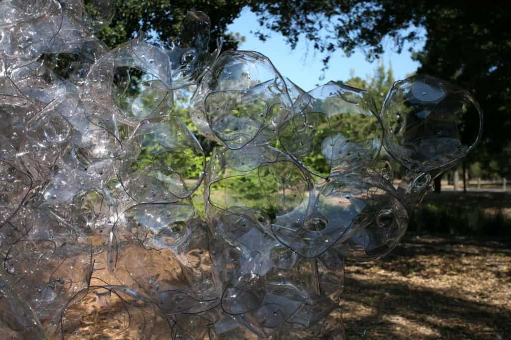
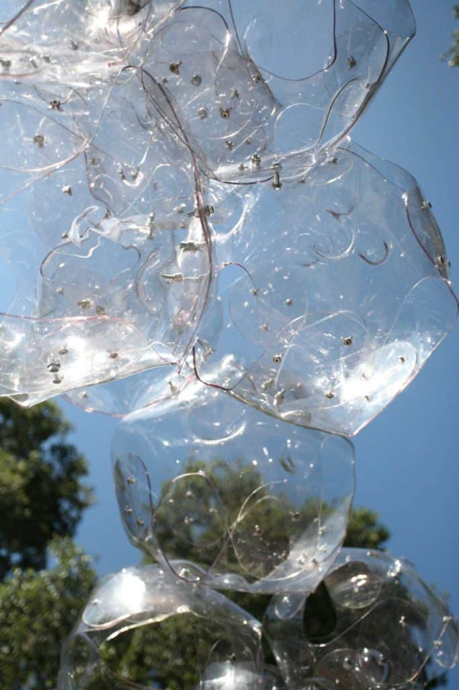
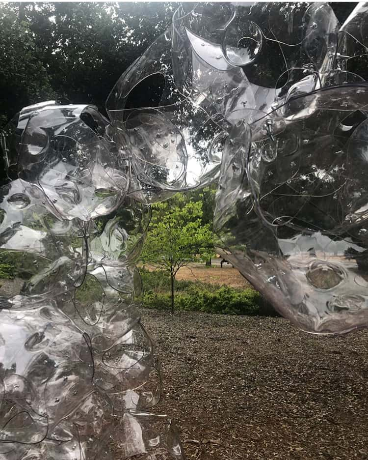
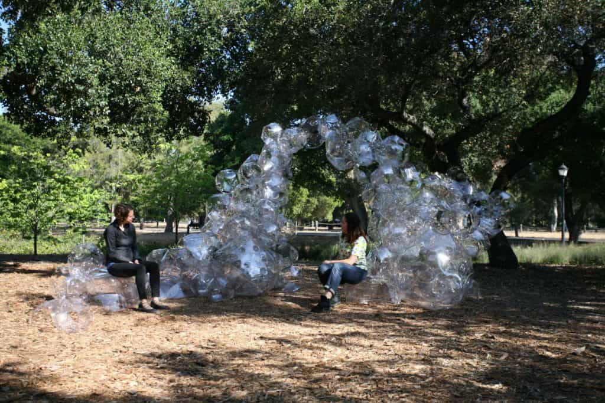
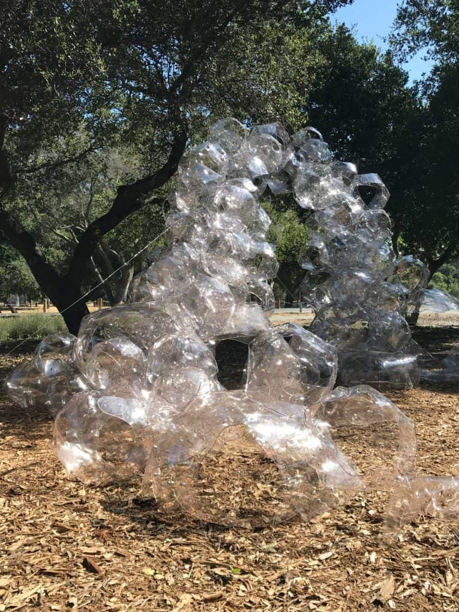
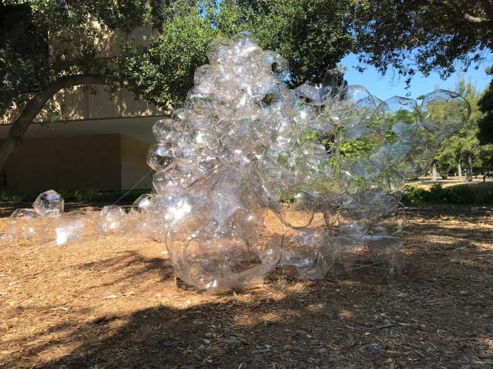
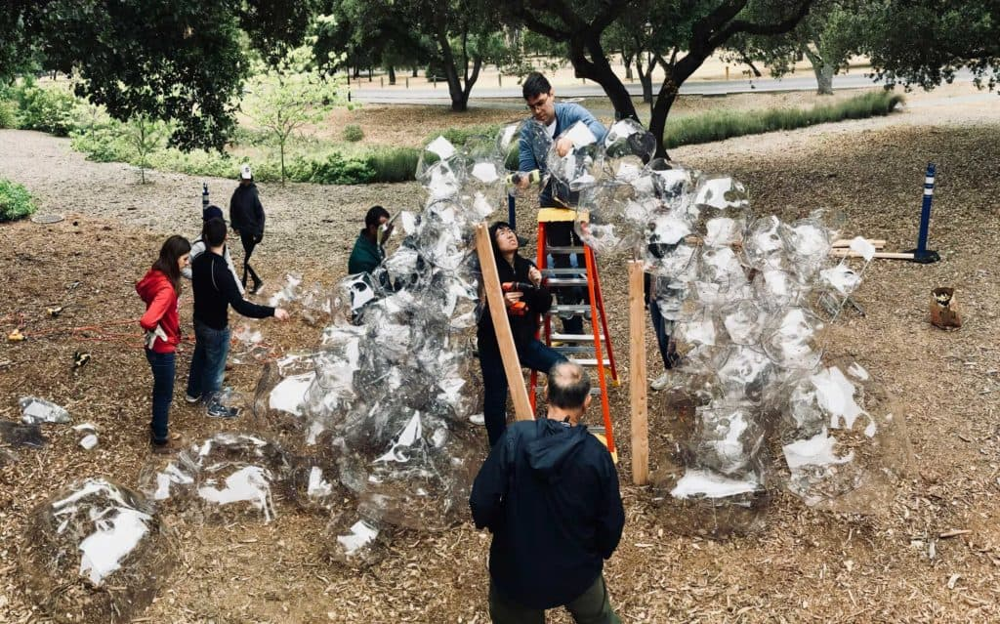
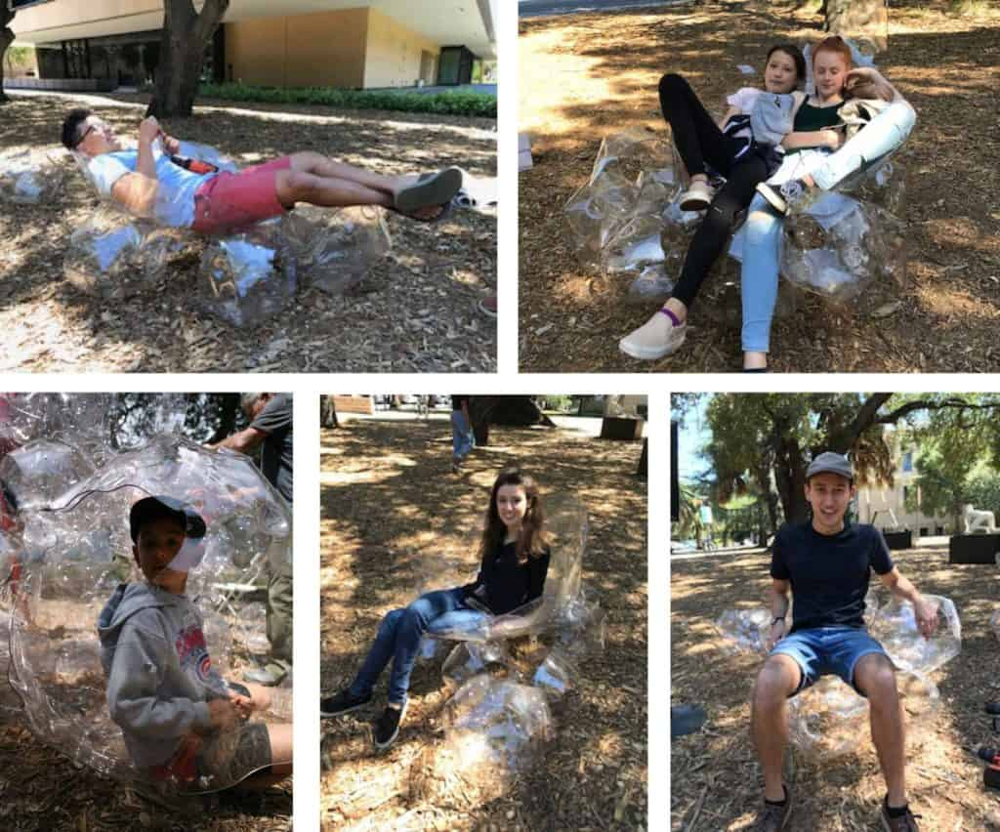

NEBULATE








Student Participants
Nicole Aw, Ben Barnett, Jerry Chen, Carlino Cuono, Jennah Jones, Anna Lai, Gabby Macias, Goran Puljic, Joel White and Euen Yang, Alex Lopez, Courtney Urbancsik, Alice Lay, Katherine Sytwu, Alan Dai, Rebecca Migan
NEBULATE
“Nebulate” is a meditation on the nature of plastic at a critical juncture in modern history when our attitudes towards plastic have become so nebulous. Co-taught with Structural Engineer Jun Sato, the course asked students to investigate sheet plastic and its capacity to mutate and adapt to new uses.
The installation’s structure was comprised of plastic bubbles of varying sizes, assembled to form a translucent, cloud-like mass. Using plastic’s malleability to structural advantage, students explored how surface deformation, through dimpling and curvature, increased the strength of the panels. The large-scale pavilion form embodied ideas of plasticity through its ebbs, flows and mutations in multiple scales and directions. Further, when the exhibition period ended, students reconfigured the modules into human scale furniture elements. Nebulate’s module-based system was conceived to evolve into multiple forms, adjusting to different needs and therefore prolonging its utility and lifespan.
Collaborating with the Material Sciences Department, students applied gold nanoparticle-based structural color to the dimples. The pink-tinted lenses of the surface forge an uneasy relationship between the viewer and the surroundings: one which reflects both the beauty and unease of plastic in our times.
© 2023 BACH ARCHITECTURE. All rights reserved. | 3752 20th Street, San Francisco, CA 94110 | (415) 425-8582 | info@bach-architecture.com